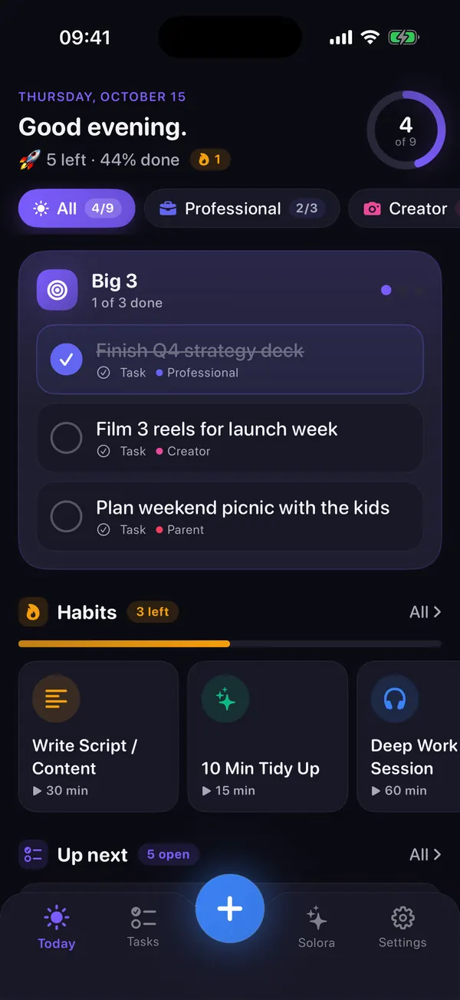
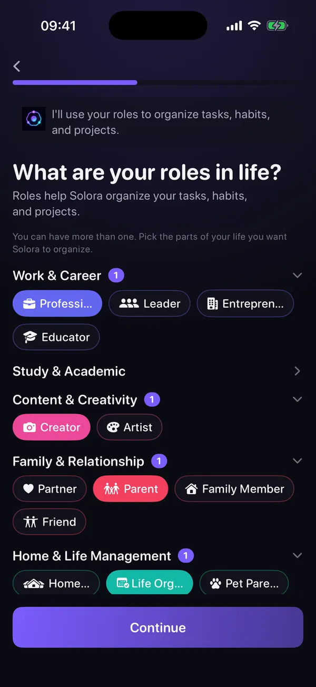
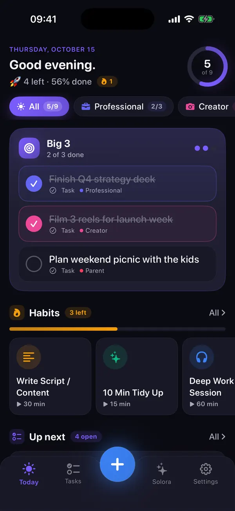
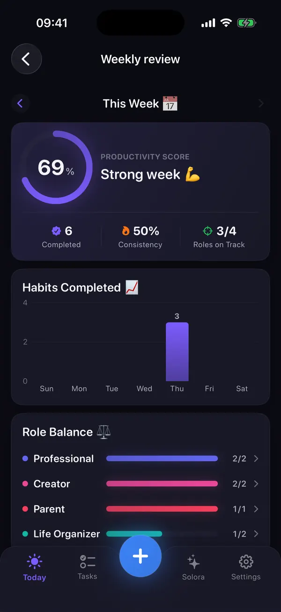
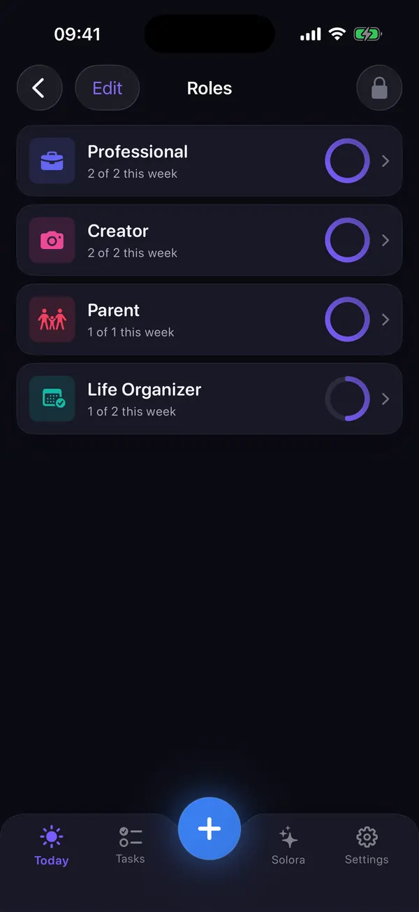
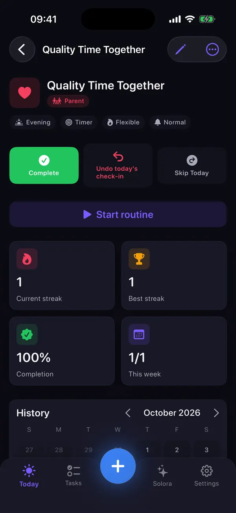
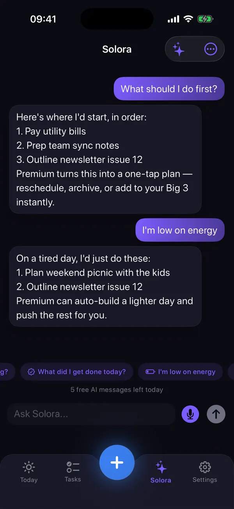
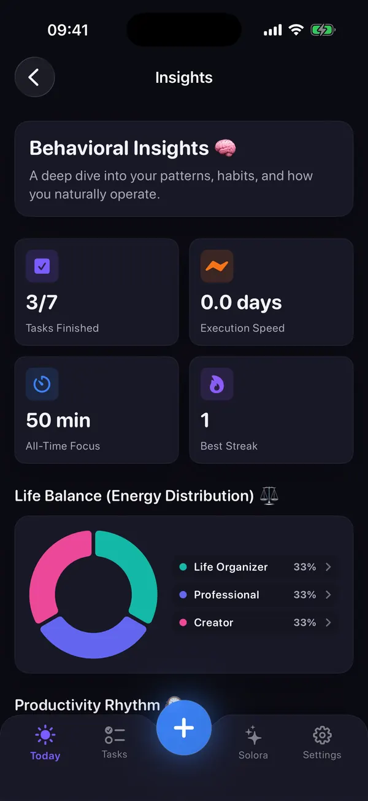

Solora: AI Life Planner · bağımsız geliştirici Gül Eda Aydemir'den
Tüm hayatın. Odaklı bir gün.
İş, ev, aile, kendin… Yapılacaklar listesi bitmiyor mu? Solora hepsini gün sonunda gerçekten bitirebileceğin kısa bir listeye çevirir: taşıdığın rolleri adlandır, bugünün en önemli 3 işini (Big 3) seç, enerjinin düşük olduğu günlerde bile alışkanlıklarını sürdür. Yapay zekâ asistanı da telefonunda çalışır; verin Solora'nın bir sunucusuna gitmez, çünkü sunucu yok.
Aynı anda birkaç rol taşıyanlar için: çalışan anneler ve babalar, öğrenciler ve sınav adayları, içerik üreticileri, girişimciler, yoğun çalışanlar.
- Ücretsiz · isteğe bağlı Premium
- Hesap gerekmez
- iPhone ve iPad
- iOS 18.6+
- Türkçe arayüz
- Veriler Toplanmaz

Bir yapılacaklar listesi daha değil
Solora nedir?
Solora: AI Life Planner, bağımsız geliştirici Gül Eda Aydemir'in iPhone ve iPad için yaptığı ücretsiz bir yaşam planlayıcısıdır. Görevlerini, alışkanlıklarını ve projelerini taşıdığın rollere (ebeveyn, öğrenci, üretici, profesyonel…) göre düzenlersin, her gün Big 3 denen kısa bir odak listesi seçersin ve cihazında çalışan bir Apple Intelligence asistanından yardım alırsın. Hesap yok, sunucu yok: App Store gizlilik etiketi “Veriler Toplanmaz”.
Sıradan bir yapılacaklar uygulaması
Bitmeyen listeler
- Görevler öncelik sırası olmadan birikir
- Her şey aynı derecede acil görünür
- Hayatının hangi alanını ihmal ettiğini görmezsin
- Liste uzadıkça suçluluk duygusu da büyür
- Gün boyu meşgulsün ama istediğin yere varamıyorsun
Solora
Bilinçli günler
- Günün taşıdığın roller etrafında kurulur
- Günlük Big 3 önceliği netleştirir
- Haftalık değerlendirme hangi rolün geride kaldığını gösterir
- Bitmeyen odak işleri yığılmaz, ertesi güne devreder
- Verini cihazında tutan bir yapay zekâ seninle birlikte planlar
Nasıl çalışır?
Daha sakin bir hafta için üç adım
Rollerini bir kez kurarsın. Sonrası her gün kısa bir seçim ve haftada bir kısa bir bakış.
-
Taşıdığın rolleri adlandır
23 rol şablonundan seç (Profesyonel, Ebeveyn, Öğrenci, Üretici, Sporcu…) ya da kendi rolünü oluştur. Her rolün bir rengi, simgesi ve küçük bir haftalık hedefi olur.

-
Bugünün Big 3'ünü seç
Bugünü iyi bir gün yapacak üç işi seç (istersen 1, istersen 5). Bitmeyenler yarına devreder; tarihi geçen görevler sessizce kaybolmaz, “Gecikmiş” etiketiyle görünmeye devam eder.

-
Haftaya bak, dengeyi kur
Haftalık değerlendirme puanını, alışkanlık tutarlılığını ve her rolün haftalık hedefine göre ne durumda olduğunu gösterir. Böylece gelecek hafta hangi role biraz daha zaman ayırman gerektiğini görürsün.

Yöntem
Günün en önemli 3 işi: Big 3 yöntemi nedir?
Big 3, bugün için en önemli üç işi seçip her şeyden önce onları yapmak demek. Otuz değil, üç. Her şey öncelikli olduğunda hiçbir şey öncelikli değildir; sen de önemli olan birkaç şeye söz verirsin, gerisi tek bir yerde sırasını bekler.
- Üç iş yapılabilir. En karışık günde bile üç kazanıma yer vardır; yoğun bir gün de gerçek bir ilerlemeyle bitebilir.
- Asıl iş seçmek. Neyin önemli olduğuna karar vermek, oyalayıcı işleri yapmaktan daha zor ve daha değerlidir.
- Roller dengeyi korur. Her rolün haftalık bir hedefi var; haftalık değerlendirme hangi rolü ihmal ettiğini gösterir, yarının Big 3'ü onu içerebilir.
- Hiçbir şey kaybolmaz. Bitmeyen Big 3 işleri “Devredildi” işaretiyle yarına geçer, bir yığının içinde kaybolmaz.
- Sayı senin kararın. Tek büyük iş mi, beş küçük iş mi? Kurulumda günde 1, 3 ya da 5 öncelik seçebilirsin.
Örnekler, bitmeyen işlerin ne olacağı ve MIT, 1-3-5, Ivy Lee ile karşılaştırma için: Günün en önemli 3 işi rehberi.
Örnek: bir gün, üç rol
Solora senin için ne yapar?
Tüm hayatın için tek, sakin bir yer
Daha uzun bir özellik listesi değil: daha az karar, daha yumuşak geçen kötü günler ve neyin önemli olduğuna dair net bir resim.
Roller
Hayatının her alanına ayrı bir yer
İş, geri kalan her şeyi yutmayı bırakır. Her rol kendi görevlerini, alışkanlıklarını ve projelerini tutar; her birinin küçük bir haftalık hedefi vardır.
- İş, eğitim, içerik, aile, ev, sağlık ve gelişim alanlarında 23 rol şablonu; istersen kendi rollerini de eklersin
- Her role haftalık hedef: örneğin Ebeveyn 3, Sağlık 3, İş 5. Solora 3.0'da rolün haftalık ilerlemesi tamamlanan görevleri sayar; alışkanlıklar ve proje adımları henüz dahil değil
- Geride kalan rolü haftalık değerlendirmedeki “Rol dengesi” bölümünde görürsün ya da asistana “Hangi rolü ihmal ediyorum?” diye sorarsın

Alışkanlıklar
Gerçek hayata dayanan alışkanlıklar
Hastalandın diye serin bozulmamalı. Solora kötü günleri de hesaba katar.
- Basit, sayım, zamanlayıcı ve adım adım rutin alışkanlıklar; başlamak için 52 şablon
- Düşük enerjili günler için daha kolay sürüm: 30 dakikalık antrenman yerine 5 dakikalık esneme (alışkanlıkta tanımlarsın; tek dokunuşla işaretlemek Premium Hafif Mod widget'ında)
- Katı, esnek ya da korumalı seri kuralı: bir günü hastalık, seyahat ya da dinlenme gibi bir nedenle koruyabilirsin
- Her alışkanlık için ısı haritası, geçmiş ve grafikler, ücretsiz

Cihaz üzerinde yapay zekâ
Angaryayı üstlenen, verini dışarı çıkarmayan bir asistan
Aklından geçeni yaz ya da söyle. Solora bunu görevlere, alışkanlıklara ve projelere çevirir; hiçbir şey kaydedilmeden önce düzenleyebileceğin kartlar olarak gösterir, istersen geri alırsın.
- Tek mesajdan birkaç öğe oluştur, gününü planla, önceliklendir ya da “Yapacak çok şeyim var” dediğinde yükünü hafiflet
- Büyük bir hedefi süre tahminli adımlara böl (ücretsiz planda ayda 3 kez)
- Sesli giriş cihazında yazıya dökülür; asistan hangi dilde yazarsan o dilde, yani Türkçe yazarsan Türkçe yanıt verir
Asistan cihazında, Apple Intelligence ile çalışır. iOS 26 veya sonrası ve Apple Intelligence destekli bir iPhone ya da iPad gerekir (iPhone 15 Pro, iPhone 16 ve sonrası, iPhone Air ya da M1 veya sonrası çipli bir iPad gibi; tam liste Apple'ın sayfasında), Apple Intelligence da açık olmalı. Apple Intelligence Türkçeyi iOS 26.1'den beri destekliyor. Solora'nın geri kalan her şeyi iOS 18.6 ve sonrasında çalışır.

İçgörüler
Neyin gerçekten işe yaradığını gör
İçgörüler neleri bitirdiğini, en iyi ne zaman çalıştığını, seni en çok neyin engellediğini ve rollerinin ne kadar dengeli olduğunu gösterir.
- Günlük ritim: sabah mı, öğleden sonra mı, akşam mı daha çok iş bitiriyorsun?
- En büyük engel: işlerin neden kaydığından öğrenilir
- Rollerin arasında yaşam dengesi, odak dakikaları ve en iyi serin
- Premium ile yapay zekânın yazdığı haftalık rapor

Güne Başlangıç ve Akşam kapanışı
Güne enerji kontrolü ve bugünün odağıyla başla. Akşam “Bugün 3 / 4 tamamlandı” özetini gör ve günü kapat.
Yapamadın mı? Yapılabilir kıl
Bir iş kaydığında Solora “Önüne ne çıktı?” diye sorar; sonra işi bölmene, kolaylaştırmana, yarına taşımana ya da bırakmana yardım eder.
Hazır adımlı projeler
9 şablon (seyahat, taşınma, iş arama, kitap yazma…), ilerleme çubukları ve fotoğraf, not, bağlantı ve renkleri topladığın bir mood board (ilham panosu).
Widget'lar ve Kestirmeler
11 ana ekran widget'ı; alışkanlığını doğrudan ana ekrandan işaretleyebildiğin bir widget da var. Kestirmeler'de “Quick Add” eylemi bulunur (Siri ifadeleri şimdilik İngilizce).
İstersen takvimle uyumlu
Takvimini bağlayıp “Görevleri takvime ekle”yi açarsan Solora, yapay zekânın böldüğü proje adımlarını bir sonraki boş zamanından başlayarak arka arkaya takvimine ekler. Premium'da asistan gününü etkinliklerine göre planlar.
Türkçe dahil altı dil
Türkçe, English, Español, Français, Português (Brasil) ve 简体中文. Dil cihazını izler; istediğin zaman Ayarlar → Dil'den değiştirebilirsin.
Kendine göre ayarla, ücretsiz
7 vurgu rengi ya da kendi rengin, açık veya koyu görünüm, nazik, normal ya da sıkı hatırlatma tarzı.
iPhone ve iPad
İkisinde de aynı uygulama. Bulut eşitlemesi olmadığı için her cihaz kendi verisini tutar.
Hiçbir şey yanlışlıkla kaybolmaz
Tamamlanan ve silinen öğeler Arşiv'e gider; oradan geri yükleyebilirsin.
Gizlilik baştan tasarlandı
Senin günün. Senin verin.
Solora'da hesap, sunucu, analiz ya da reklam SDK'sı yok. Planların cihazında durur, asistan cihazındaki Apple Intelligence ile çalışır, sesli giriş de cihazında yazıya dökülür.
- Hesap yok
- Sunucu yok
- Reklam ve analiz yok
- Yapay zekâ ve ses cihazda
- App Store etiketi: Veriler Toplanmaz
Dürüst olmak gerekirse bunun bir bedeli var: cihazlar arası bulut eşitlemesi ve veri dışa aktarma yok. Verin, iPhone ya da iPad'inin normal yedeğine dahil olur.
Fiyat
Ücretsiz mi, Premium mu?
Solora'yı indirmek ücretsiz ve ücretsiz haliyle de işe yarar. Premium sınırları kaldırır ve birkaç yapay zekâ özelliği ekler. İki durumda da reklam yok.
| Özellik | Ücretsiz | Premium |
|---|---|---|
| Roller | 4 | Sınırsız |
| Aktif görevler | 15 | Sınırsız |
| Alışkanlıklar | 20 | Sınırsız |
| Projeler | 5 | Sınırsız |
| Asistan sohbeti | Günde 5 | Sınırsız |
| Yapay zekâ ile proje bölme | Ayda 3 | Sınırsız |
| Takvimi bilen yapay zekâ gün planı | – | Dahil |
| Asistan planları: önceliklendirme, yeniden planlama, hafif gün | Metin önerisi | Tek dokunuşla plan |
| Asistanın, söylediğin tercihleri hatırlaması | – | Dahil |
| Yapay zekânın yazdığı haftalık rapor | – | Dahil |
| Premium widget'lar ve widget temaları | – | Dahil |
| Big 3, ritüeller, alışkanlık istatistikleri, İçgörüler, Arşiv, renkler | Dahil | Dahil |
Premium planları: Aylık · Yıllık · Ömür boyu (tek seferlik ödeme, abonelik yok). Güncel fiyatı App Store'da gör.
Güncel fiyatı her zaman satın almadan önce App Store gösterir. Sana uygun bir ücretsiz deneme varsa App Store onaydan önce gösterir.
Abonelikler sen iptal edene kadar otomatik yenilenir: Ayarlar → adın → Abonelikler. Satın alımlarını Solora'nın Ayarlar ekranından geri yükleyebilirsin.
Bir bakışta
Solora hakkında bilgiler
- Uygulama
- Solora: AI Life Planner
- Geliştirici
- Gül Eda Aydemir, bağımsız iOS geliştiricisi
- Fiyat
- Ücretsiz indirilir; isteğe bağlı Premium var (aylık, yıllık ya da tek seferlik). Güncel fiyatı App Store'da gör
- Gereksinim
- iOS 18.6 veya sonrası · iPadOS 18.6 veya sonrası
- Yapay zekâ asistanı
- iOS 26 veya sonrası, Apple Intelligence destekli bir cihazda, Apple Intelligence açıkken
- Cihazlar
- iPhone ve iPad (Apple Watch ya da Mac uygulaması yok)
- Diller
- Türkçe, English, Español, Français, Português (Brasil), 简体中文
- Gizlilik
- App Store etiketi “Veriler Toplanmaz”; hesap yok; analiz ya da reklam SDK'sı yok
- Eşitleme ve yedek
- Bulut eşitlemesi ve dışa aktarma yok; veriler cihaz yedeğine dahil
- Sürüm
- 3.0, 7 Ekim 2026'da yayınlandı (ilk sürüm 1 Temmuz 2026)
- Boyut
- 22,6 MB
- Kategori
- Üretkenlik · Yaş sınırı 9+
Bilgiler 15 Ekim 2026'da uygulamanın kendisi ve Türkiye App Store sayfasıyla karşılaştırılarak kontrol edildi.
Yenilikler
Solora 3.0
7 Ekim 2026'da yayınlandı
- Daha hızlı ve akıcı bir deneyim
- Daha akıllı yapay zekâ
- Yeni diller: İspanyolca, Fransızca, Portekizce ve Çince
- Geliştirilmiş alışkanlıklar
- Tamamlanan görevler artık Arşiv'e taşınıyor
- Hata düzeltmeleri ve arayüz iyileştirmeleri
App Store sürüm notlarından (orijinali İngilizce) çevrildi. App Store'daki sürüm geçmişi
Temelleri öğren
Parçalar nasıl birleşiyor?
Solora'nın uygulama içindeki “Temelleri öğren” rehberinden web için yeniden çizilmiş kısa animasyonlar: roller görevlerini, alışkanlıklarını ve projelerini tutar; Big 3 de bugünün odağını hepsinin arasından seçer.
Rehberler
Uygulamayla ya da kâğıt kalemle daha iyi planla
Solora'nın arkasındaki yöntemleri anlatan kısa, uygulanabilir rehberler. Kâğıtta da işe yararlar; Solora yalnızca saymayı ve hatırlamayı senin yerine yapar.
Tüm Solora rehberleri: Solora rehberleri · Uyku, galeri ve paylaşım dahil: Gül Eda'nın tüm Türkçe rehberleri · İngilizce okuyorsan daha fazlası: Solora guides (haftalık değerlendirme, sabah ve akşam rutinleri, düşük enerjili günler, çalışan ebeveynler).
Sorular
Sık sorulan sorular
Solora: AI Life Planner nedir?
Solora: AI Life Planner, bağımsız geliştirici Gül Eda Aydemir'in iPhone ve iPad için ücretsiz yaşam planlayıcısıdır. Görevlerini, alışkanlıklarını ve projelerini taşıdığın rollere göre düzenlersin, her gün Big 3 denen kısa bir odak listesi seçersin ve cihazında Apple Intelligence ile çalışan bir yapay zekâ asistanından yardım alırsın. Hesap gerekmez.
Big 3 (günün en önemli 3 işi) nedir, Solora'da nasıl çalışır?
Big 3, bugünü başarılı kılacak üç sonucu seçip her şeyden önce onları yapmaktır. Solora'da kurulumda günde 1, 3 ya da 5 öncelik belirlersin ve bunları görevlerinden, alışkanlıklarından ve projelerinden seçersin; bitmeyenler ertesi güne devreder. Ayrıntılar günün en önemli 3 işi rehberinde.
Hayatımı nasıl düzene sokarım, nereden başlamalıyım?
Küçük başla: hayatındaki 3–5 rolü yaz, bugün için sadece 3 iş seç, tek bir minik alışkanlık ekle ve haftada bir 15 dakikalık bir değerlendirme yap. Solora ilk üç adımı rol ve alışkanlık şablonlarıyla yaklaşık 5 dakikada kurar. Adım adım anlatım: hayatını düzene sokmak için 5 adım.
İş, aile ve kendime ayırdığım zamanı nasıl dengelerim?
Eşit saat peşinde koşmak yerine her role küçük bir haftalık hedef koy (örneğin Aile 3, Sağlık 2, İş 5) ve haftada bir hangi rolün ihmal edildiğine bak. Solora'nın haftalık değerlendirmesi her rol için tamamlanan görevleri hedefle karşılaştırır (Solora 3.0'da alışkanlıklar bu sayıya henüz dahil değil); asistana “Hangi rolü ihmal ediyorum?” diye de sorabilirsin. Böylece yarının Big 3'üne o rolden bir iş eklersin.
Solora ücretsiz mi? Premium neler ekliyor?
Evet, Solora'yı indirmek ve kullanmak ücretsiz. Ücretsiz plan 4 rol, 15 aktif görev, 20 alışkanlık, 5 proje, günde 5 asistan sohbeti ve ayda 3 yapay zekâ proje bölme içerir. İsteğe bağlı Premium (aylık, yıllık ya da tek seferlik Ömür boyu; güncel fiyatı App Store'da gör) bu sınırları kaldırır; takvimi bilen yapay zekâ gün planı, asistanın tek dokunuşla uygulanan planlarını (önceliklendirme, yeniden planlama, hafif gün), söylediğin tercihleri hatırlamasını, yapay zekânın yazdığı haftalık raporu, Premium widget'ları ve widget temalarını ekler.
Abonelik olmadan kullanma seçeneği var mı?
Var. Ömür boyu plan tek seferlik bir satın almadır, abonelik içermez; güncel fiyatı App Store'da gör. Aylık ve yıllık planlar ise sen Apple hesabının abonelik ayarlarından iptal edene kadar otomatik yenilenir. Hiç ödeme yapmadan ücretsiz planla da devam edebilirsin.
Solora'nın yapay zekâsı verilerimi buluta gönderiyor mu?
Hayır. Asistan Apple'ın cihaz üzerindeki modelleriyle (Apple Intelligence) çalışır, sesli giriş de cihazda yazıya dökülür. Solora'nın hesabı, sunucusu, analiz ya da reklam SDK'sı yoktur; App Store gizlilik etiketi “Veriler Toplanmaz”dır.
Yapay zekâ asistanı Türkçe anlıyor mu?
Evet. Asistan hangi dilde yazarsan o dilde yanıt verir; Türkçe yazarsan Türkçe yanıtlar. Bunun için cihazında Apple Intelligence'ın açık olması gerekir; Apple Intelligence Türkçeyi iOS 26.1'den beri destekliyor. Uygulamanın arayüzü de Türkçedir: telefonun Türkçeyse Solora kendiliğinden Türkçe açılır, istersen Ayarlar → Dil'den değiştirebilirsin.
Apple Intelligence olmadan da çalışır mı?
Evet. Roller, Big 3, görevler, alışkanlıklar, projeler, ritüeller, İçgörüler ve widget'lar iOS 18.6 veya sonrası olan her iPhone ve iPad'de çalışır. Yapay zekâ asistanı ise iOS 26 ve Apple Intelligence destekli bir cihaz (ör. iPhone 15 Pro, iPhone 16 ve sonrası ya da M1 veya sonrası çipli bir iPad) ister, Apple Intelligence da açık olmalıdır. Bu olmadan da asistan basit istekleri öğelere çevirebilir ve temel bir plan önerebilir.
iPad'de çalışır mı, cihazlar arasında eşitlenir mi?
Solora hem iPhone'da hem iPad'de çalışır. Bulut eşitlemesi yoktur, yani her cihaz kendi verisini tutar ve bu veri o cihazın normal yedeğine dahil olur. Apple Watch ya da Mac uygulaması ve veri dışa aktarma yoktur.
İnternet olmadan çalışır mı?
Evet. Her şey cihazında saklanır ve bir sunucu yoktur; bu yüzden planlama internetsiz çalışır, destekli cihazlarda asistan da. İnternete yalnızca uygulamayı indirmek ya da Premium satın almak için ihtiyacın var.
Kötü ya da enerjimin düşük olduğu bir günde ne olur?
Solora kusursuz olmayan günler için yapıldı. Güne Başlangıç bir enerji kontrolüyle açılır, alışkanlıkların daha kolay bir sürümü olabilir (antrenman yerine 5 dakikalık esneme; tek dokunuşla işaretlemek Premium Hafif Mod widget'ında), seri hastalık ya da seyahat gibi bir nedenle korunabilir. Bir iş kaydığında Solora “Önüne ne çıktı?” diye sorar ve işi bölmene, küçültmene ya da taşımana yardım eder. Bu bir planlayıcı, tıbbi tavsiye değil: haftalardır bitkin hissediyorsan bir doktora danış. İşleri sürekli erteliyorsan erteleme rehberine göz at.
Widget ve Siri kısayolu var mı?
Evet. Büyük 3, Bugünün Odağı, Solora'ya Ekle, Seri ve alışkanlığını doğrudan ana ekrandan tamamlayıp atlayabildiğin İşaretle widget'ı dahil 11 ana ekran widget'ı var. Bazıları Premium'dur; örneğin en küçük sonraki adımını gösteren ve bir alışkanlığın kolay versiyonunu tek dokunuşla işaretleyen Hafif Mod widget'ının tam sürümü. Kestirmeler uygulamasında “Quick Add” eylemi bulunur; Siri ifadeleri şimdilik İngilizce (“Quick add to Solora”). Yazdığın ya da söylediğin şeyi görev, alışkanlık ya da proje olarak kendisi ayırır.
Daha fazla yanıt, sorun giderme ve iletişim bilgileri Solora destek sayfasında (İngilizce). Türkçe yazabilirsin: solostaseraofficial@gmail.com
Solora'yı kim yapıyor?
Bağımsız bir geliştiricinin elinden
Solora'yı Gül Eda Aydemir tasarlıyor ve geliştiriyor; ATHA, DUMP, Solo.Swipe ve Solo.Shots da onun uygulamaları. Solora'da reklam yok, hesap yok, veri toplama yok.
En bilinçli gününe başla.
iPhone ve iPad'de ücretsiz. Hesap yok; kurman gereken tek şey rollerin.
 Bilgisayarda mısın?iPhone kameranla tara
Bilgisayarda mısın?iPhone kameranla tara